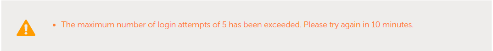

Troubleshoot Dexcom Share
Username and password
Your Dexcom account is the one that identifies you to access all services: Store, Clarity and mobile apps. In order to make sure you’re accessing the right account, log into Clarity to check your credentials are valid.
For US account: https://clarity.dexcom.com/
For all others: https://clarity.dexcom.eu/
{kind=link}
In the case you have linked accounts, check you are using the right credentials for the profile you want to bridge to Nightscout.
Verify you actually have current data in this profile/account! You want to put the username and password of the account that has CGM data in BRIDGE, this is usually the credentials you are using with the master phone (the one connected to the sensor).
{kind=link}
Password
Some people have had problems with their bridge connecting when their Dexcom passwords are entirely numeric. If you have connection issues in that case, try changing your password to something with a mix of numbers and letters.
Changing password
Before you decide to change your password, make sure to update your Nightscout variables accordingly and make sure you have recent data in Clarity before exiting maintenance mode.
Username is an email
Newly created Dexcom users do not have an username but only an email address.
{kind=link}
This can be an issue if you want to use bridge to have your data directly in Nightscout. Make sure you’re using the latest release if you experience problems.
Common symptoms are:
no data in Nightscout even with correct credentials
account locking once or more per day even with correct credentials
Username is a phone number
New users might have the phone app setup with their phone number including country code and the symbol +. This is not supported by Nightscout. Continue below and create a dependent account with an alphanumerical username.
Obtaining a username
Dependent accounts can have a username.
{kind=link}
You can create your Dexcom account and add dependent accounts for children, wife, …
Some dependent accounts with an email address can generate problems when trying to connect directly to Nightscout.
Account lock
You can check if your account is locked by trying to log into Clarity.
{kind=link}
If you see this message, you must disable (enter an empty username for example) all devices and apps trying to get data from or push data into Dexcom share.
In order to recover from an account lock, it is usually enough to wait for 10-15 minutes after you disabled all devices and apps trying to access the account with a wrong password.
Do not forget any app or device!
Nightscout
Smartwatches apps
Sugarmate, Happy Bob, xDrip+,…
…
Dexcom Share
Make sure you have Dexcom Share turned ON in your Dexcom app. In the Dexcom app’s main screen, find the triangle made of dots. If the dots are grey, you do not have Share turned on. Tap the triangle, and follow the directions to add a follower (yourself if you don’t have someone else you’d like to invite) and turn on Share.

If you are using a Dexcom system, and your data is not appearing in Nightscout, there are only a limited number of reasons for that. You should check your (1) Heroku settings and (2) Dexcom Share.
NOTE: The #1 reason why BGs aren’t showing is that you have mismatched password and user names in Heroku settings and Dexcom.
Verify your configuration
Variables location will depend on the platform you use:
You must use the same
BRIDGE_PASSWORDorBRIDGE_USER_NAMEthat your Dexcom mobile app is using.You must have
bridgeandcareportalon theENABLEline (you can have other values there…but don’t forget these two).If you are outside the USA, you must add
BRIDGE_SERVERset toEUin Heroku settings.Your
careportalmust be one word in theENABLEline, sometimes autocorrect makes it two words.If using
mmol, make sure you have spelled that value correctly in theDISPLAY_UNITS.
Authentication errors
One thing that can happen if you have an incorrect Dexcom login/password in your Share account settings and/or in your Nightscout BRIDGE settings is that Dexcom will lock your account…and you won’t see CGM data in Nightscout. If you notice your CGM readings disappeared, but everything else is flowing…
Check your Heroku logs that are viewable by selecting View Logs from the drop-down menu underneath the More option.
{kind=link}
With Railway they are available selecting your app, then Deployments and View Logs at the end of the top (last) deployment line.
{kind=link}
Do your logs have “SSO authentication errors” like in the red box highlighted above? If you do, then:
Delete your
BRIDGEentries within Heroku settings. Don’t delete the variables, just delete the values ofBRIDGE_PASSWORDandBRIDGE_USER_NAME.Wait 15 minutes and then follow the directions below. It is important to wait 15 minutes: the reason you can’t log in right now is that your Dexcom account has a temporary lock from the passwords in the step above being incorrect. The temporary lock will expire after 10-15 minutes of giving the account login a break from the incorrect logins. So, definitely wait or else you’ll just keep prolonging the issue.
Hint
About your Bridge password and user name The most common error on initial Nightscout setups is that people incorrectly use an old account or an old password. To test your username and password, go to Dexcom’s Clarity page (check here for USA accounts and here for the others) and try logging in to your Dexcom account. If your account info isn’t valid, or you don’t see any data in your Clarity account… you need to figure out your actual credentials before moving ahead.